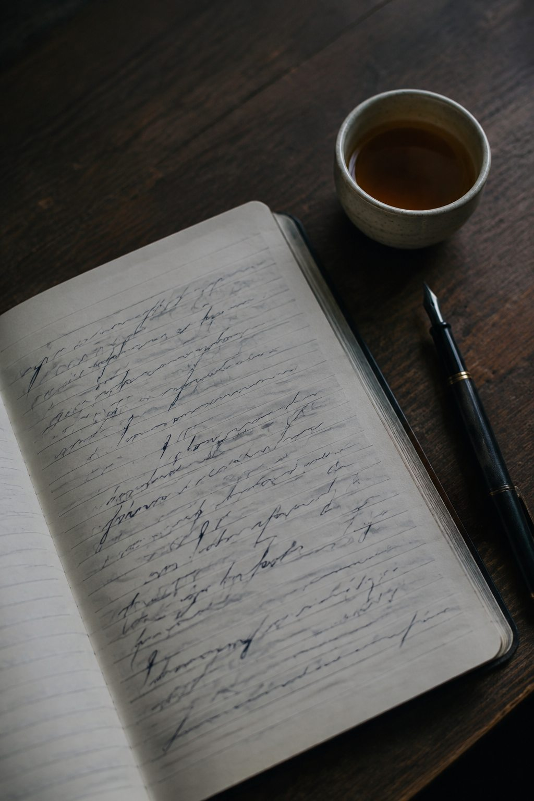

Finding a public voice
Journalism school, classrooms, reporting, and the first serious attempts to understand what a story can do in the world.
I am Leena, a writer, director, creative strategist, VFX producer, former reporter, and permanent student.
I move between language and images, between the first fragile idea and the many practical decisions that help it survive. This is where those parts of my life are allowed to sit beside one another.
Write to me
Journalism school, classrooms, reporting, and the first serious attempts to understand what a story can do in the world.
Ground reporting in Odisha made neat narrative arcs feel dishonest. Real life rarely resolves before the deadline.
At Schbang, culture, copy, scripts, and campaigns became a daily practice. #BeTheChangeForTB showed what participation can do.
VFX production revealed the thousands of careful choices behind a believable frame, from The Royals to Mismatched Season 3.
I am writing a manuscript, developing an independent film, and studying literature, authorship, and visual culture.
Dalit literature, world cinema, visual effects, cultural specificity, who gets to narrate, and what an image asks us to believe.